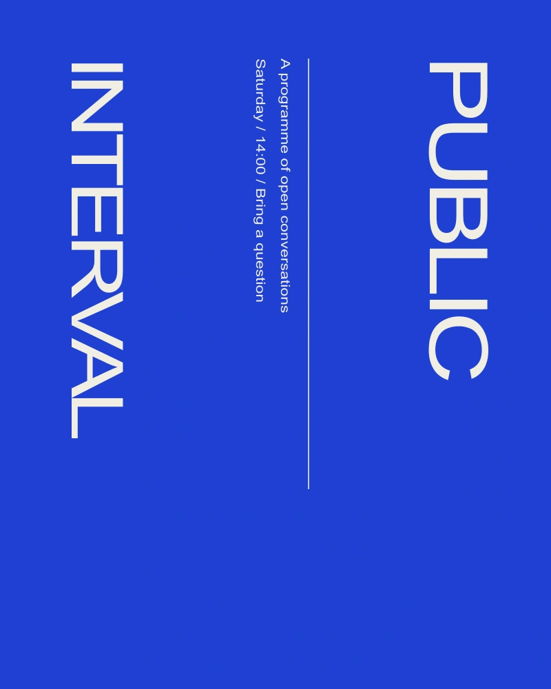

The starting point
Public interval is an independent poster study about the time before a discussion begins. The brief was to make an invitation that could be read from across a room and still reward someone standing close to it.
A graphic decision
I used the space between the two words as the organizing device. The title occupies the top and bottom of the sheet, while the practical information sits in the interval. That gap is not an empty area waiting for decoration. It is where the invitation happens.
A system, in use
The series uses two ink colors and a single family. Dates occupy a consistent horizontal line, but the length of the interval changes with the title. This allows a related set of posters without forcing every event into an identical silhouette.
At reading distance
A small line reading “come with a question” gives the programme a conversational tone. It is set at ordinary reading size, not used as an ornamental micro-caption. The design works in a monochrome version because position carries the hierarchy before color does.

Try the spacing
A small live typesetting study. Change the phrase or the interval between letters.
Limits and next questions
This is a self-initiated print concept. No event took place and no organizer commissioned the work. The next useful test would be a full-size print viewed at several distances, with particular attention to the date line.